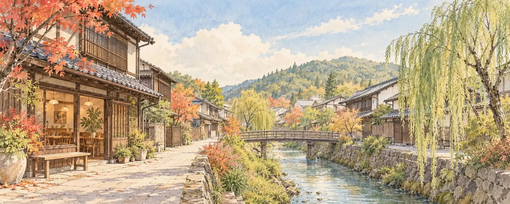

新蔵通りと、路地の記憶
かつてのにぎわいを思い浮かべながら、新蔵通り周辺へ。花街の歴史と昭和の飲食街の記憶が重なる界隈です。建物の表情や道の曲がり方にも目を向けてみましょう。
周辺を地図で見る ↗路地の記憶をたどり、川辺でひと息。
るぽんからはじまる、白河の小さな街歩き。

白河市向新蔵（むかいしんくら）。カフェるぽんのあるこの街には、かつて「新地」と呼ばれた界隈の歴史が息づいています。
本町の大火をきっかけに移ってきた遊郭、馬市とともに生まれたにぎわい、そして昭和の飲食街。新蔵通り周辺には、時代ごとに人が集い、語らい、ひと息ついてきた記憶が重なっています。
少し視線を変えて路地を歩き、谷津田川のほとりへ。名所を急いで巡るよりも、街の時間をゆっくり感じるさんぽをご案内します。
白河市歴史民俗資料館の『写真で見る白河のあゆみ』を紹介する資料によると、白河町の大火を受け、本町の旅宿兼貸座敷業の一部が向新蔵に移りました。その後、店が増え、遊郭街が形づくられていきました。
白河提灯まつりの町内紹介にも、焼けた遊郭十数軒が「今の福港の通り」へ移ったと伝えられています。
向新蔵の遊郭街の繁栄は、白河の馬市と深く結びついていました。馬の取引で人々が集まる時期、街も大きくにぎわったと伝わります。資料館の説明では、遊郭は馬市の盛況とともに栄え、その衰退とともに消えていったとされています。
花街の時代を経た後も、新蔵界隈は飲食の街として親しまれてきました。地元の町内紹介には、馬市の頃のにぎわいと、その後もネオンが輝いていた様子が記されています。
白河市の観光案内も、新蔵通りを「昭和の余韻が残る」界隈として紹介しています。今の街を歩くとき、その背景を知っていると、何気ない道にも物語が見えてきます。
向新蔵と、その周辺で楽しむ街歩きのヒント。順番を決めず、気分に合わせて選んでみてください。
かつてのにぎわいを思い浮かべながら、新蔵通り周辺へ。花街の歴史と昭和の飲食街の記憶が重なる界隈です。建物の表情や道の曲がり方にも目を向けてみましょう。
周辺を地図で見る ↗街の歴史をたどったあとは、川辺へ。谷津田川沿いの風景を眺めながら、足をゆるめる時間を。新蔵界隈から、白河のまちなかへ視線が広がります。
周辺を地図で見る ↗白河の街歩きマップにも掲載されている、向新蔵のお寺です。街のにぎわいとは違う、落ち着いた表情にふれる寄り道を。境内では行事や参拝の方を優先しましょう。
場所を地図で見る ↗地元の町内紹介でも、谷津田川周辺とともに散歩の場所として紹介されている友月山公園。街の中を歩いたあと、緑のある場所へ寄り道するのもおすすめです。
場所を地図で見る ↗各スポットの紹介であり、実測した順路・所要時間の案内ではありません。地図と現地の案内を確かめてお歩きください。住宅や私有地への立ち入り、住民の方が写り込む撮影はお控えください。
歩いて見つけた風景を思い返しながら、ひと休み。
向新蔵50番地のカフェるぽんで、街歩きの余韻をお楽しみください。
お食事から、甘いものまで。
さんぽの前にも、帰り道にも、お立ち寄りください。
歴史の記述は、次の公開資料と白河の街歩きマップをもとに編集しています。
本ページのイラストは街歩きの雰囲気を表現したもので、古写真や史料ではありません。